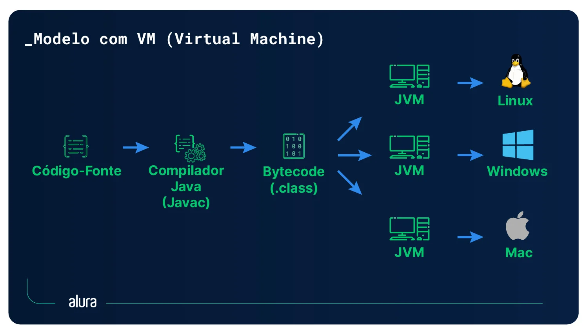

Java é uma das linguagens de programação mais usadas no mundo. Ela está presente em aplicativos Android, sistemas de bancos, servidores web e até em cartões inteligentes.
Nesta página você vai conhecer um pouco da história do Java, como ele funciona e quais são os seus principais conceitos.
Um pouco de história
O Java começou a ser desenvolvido em 1991 por uma equipe da empresa
Sun Microsystems
, liderada por
James Gosling
. O projeto se chamava Green Project e a ideia inicial era criar uma linguagem para aparelhos eletrônicos, como TVs e controles remotos.
No começo a linguagem se chamava
Oak
(carvalho, em inglês), mas o nome teve que ser trocado porque já existia uma marca registrada com esse nome. O nome escolhido foi
Java
, que é uma ilha da Indonésia famosa pelo café. Por isso o símbolo da linguagem é uma xícara de café!
A linguagem foi apresentada oficialmente em 1995 e a primeira versão (JDK 1.0) saiu em janeiro de 1996. Em 2010 a Sun foi comprada pela
Oracle
, que hoje é a responsável pelo Java junto com a comunidade do projeto
OpenJDK
.
Como o Java funciona?
Uma das frases mais famosas sobre o
Java
é
"Write once, run anywhere"
(escreva uma vez, execute em qualquer lugar). Isso quer dizer que o mesmo programa pode rodar no Windows, no Linux ou no macOS sem precisar ser reescrito.
Compilação para bytecode
O código Java é escrito em arquivos com a extensão
.java
. Esses arquivos são compilados pelo programa
javac
, que gera arquivos
.class
. Esses arquivos não contêm código de máquina, e sim um código intermediário chamado
bytecode
.
A Máquina Virtual Java (JVM)
Quem executa o bytecode é a
JVM
(Java Virtual Machine). Cada sistema operacional tem a sua própria JVM, e é ela que traduz o bytecode para instruções que o computador entende. É por isso que o Java é
chamado de
multiplataforma
.

Do código-fonte até a execução na JVM.
JDK, JRE e JVM
JVM:
a máquina virtual que executa o bytecode.
JRE:
(Java Runtime Environment) a JVM mais as bibliotecas necessárias para rodar programas.
JDK:
(Java Development Kit) o JRE mais as ferramentas para desenvolver, como o compilador
javac
.
Meu primeiro programa
Todo programa Java fica dentro de uma
classe
. O ponto de partida do programa é o método
main
. Veja o clássico "Olá, mundo!":
public class OlaMundo {
public static void main(String[] args) {
System.out.println("Olá, mundo!");
}
}
Para executar, salve o arquivo como
OlaMundo.java
(o nome do arquivo precisa ser igual ao nome da classe), compile com
javac OlaMundo.java
e rode com
java OlaMundo
.
Orientação a Objetos
Java é uma linguagem
orientada a objetos
. Isso significa que o programa é organizado em
classes
, que funcionam como moldes, e
objetos
, que são criados a partir dessas classes. Por exemplo, a classe
Carro
pode ter atributos como cor e modelo, e cada carro criado é um objeto diferente.
Os quatro pilares
Abstração:
representar só as características importantes de algo do mundo real.
Encapsulamento:
esconder os detalhes internos de uma classe e permitir o acesso só por métodos.
Herança:
uma classe pode herdar atributos e métodos de outra classe (palavra
extends
).
Polimorfismo:
um mesmo método pode se comportar de formas diferentes dependendo do objeto.
Tipos primitivos
O Java é uma linguagem
fortemente tipada
: toda variável precisa ter um tipo definido. Existem 8 tipos primitivos:
Números inteiros:byte
,
short
,
int
e
long
.
Números com casas decimais:float
e
double
.
Caractere:char
.
Verdadeiro ou falso:boolean
.
Além deles existem os tipos por referência, como
String
, que guarda textos, e os vetores (arrays).
Outras características
Garbage Collector
Em linguagens como C, o programador precisa liberar a memória manualmente. No Java existe o
coletor de lixo
(Garbage Collector), que remove automaticamente da memória os objetos que não são mais usados.
Versões do Java
Desde o Java 10 (2018), uma nova versão é lançada a cada seis meses. Algumas versões são chamadas de
LTS
(Long-Term Support) e recebem suporte por mais tempo, como o Java 8, 11, 17, 21 e 25. Empresas normalmente preferem usar as versões LTS.
Onde o Java é usado?
Java é muito usado em sistemas de empresas e bancos, em servidores web (com frameworks como o Spring), em aplicativos Android e em jogos, como a versão original do
Minecraft .